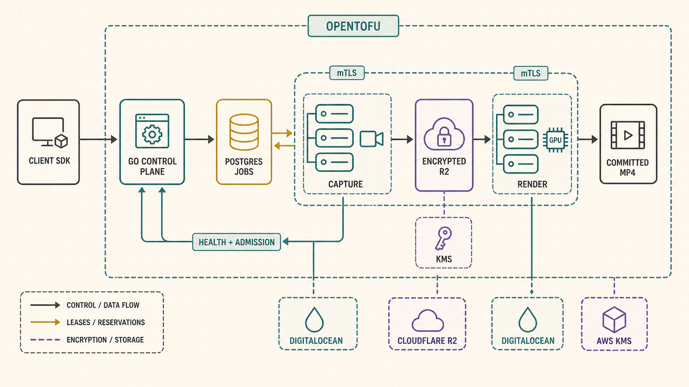
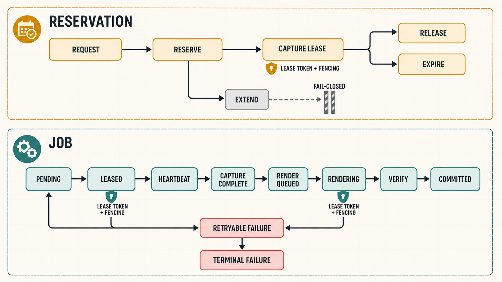

Recorder system guided spec
A visual map from “record this meeting” to a committed video and transcript, including what must be locked before four implementation lanes separate.
Background
Chalk meetings already move live audio and video through Cloudflare. Recording adds a second promise: the result must survive a closed browser, a dead worker, delayed processing, and retries without losing ownership or charging twice.
The chosen design separates live capture from later composition. A small native worker stores short encrypted pieces during the meeting; a graphics worker assembles the final view afterward. This keeps live capture light and lets expensive graphics machines turn off when idle.
flowchart LR
Today["Live meeting"] --> Promise["Recording promise"]
Promise --> Capture["Save selected media safely"]
Capture --> Compose["Build the final view later"]
Compose --> Result["Video and transcript"]
Mini world: try the intended behavior
Architecture: decisions stay separate from media
flowchart LR
subgraph Product["Product boundary"]
Meeting["Meeting requests recording"]
Playback["Authorized playback"]
end
subgraph Authority["Chalk authority boundary"]
Control["Control service"]
DB[("Durable database")]
Reconcile["Reconciler"]
end
subgraph Live["Live media boundary"]
Relay["Cloudflare media relay"]
Capture["Native capture worker"]
end
subgraph Async["After-meeting boundary"]
Temp[("Encrypted temporary pieces")]
Render["Graphics render worker"]
Final[("Final video and audio chunks")]
Transcript["Transcription workers"]
end
Meeting -->|reserve| Control
Control -->|commit every decision| DB
Control -->|one fenced job| Capture
Relay -->|selected encoded tracks| Capture
Capture -->|encrypted pieces| Temp
DB -->|one render job| Render
Temp -->|scoped reads| Render
Render -->|verified outputs| Final
Render -->|facts only| Control
DB -->|one job per audio chunk| Transcript
Reconcile -->|compare intent with reality| DB
Final -->|authorized result| Playback

Cloudflare moves live packets. Storage holds bytes. Workers do bounded jobs. The control service and PostgreSQL decide what exists.
One recording journey
sequenceDiagram
participant Person as Meeting participant
participant Control as Control service
participant Capture as Capture worker
participant Cloud as Cloudflare relay
participant Store as Private storage
participant Render as Graphics worker
participant Speech as Transcription
Person->>Control: Request recording
Control->>Control: Reserve capacity and usage
Control-->>Capture: Issue one fenced assignment
Capture->>Cloud: Join and request selected tracks
Cloud-->>Capture: Encoded audio, camera, and screen share
loop Every 10–15 seconds
Capture->>Store: Write one encrypted immutable piece
Capture->>Control: Report verified object facts
end
Capture->>Control: Complete ordered manifest
Control-->>Render: Issue verified render assignment
Render->>Store: Read and decrypt bounded inputs
Render->>Store: Write video, speaker map, and audio chunks
Render->>Control: Finalize verified facts
Control->>Control: Commit artifact and jobs atomically
Control-->>Speech: Make one job per audio chunk available
Control-->>Person: Recording is available
Reserve capture, render deadline, and usage.
Save selected encoded tracks and every layout decision.
Replay the recorded timeline and verify one final video.
Make video and transcription work permanent in one transaction.
The five promises every implementation lane shares
- tenant, recording, participant ownership, and attempt;
- storage key, method, size, condition, and expiry;
- layout and media policy versions;
- deadline, retry, cleanup, and final state.
- heartbeat, bounded progress, and resource use;
- verified immutable object facts;
- explicit media gaps and failure codes;
- one fenced terminal result.
Data ownership: the database remembers; storage holds bytes
erDiagram
RESERVATION ||--|| RECORDING : creates
RECORDING ||--o{ JOB : owns
NODE_IDENTITY ||--o{ JOB : claims
JOB ||--o{ OBJECT_INTENT : receives
RECORDING ||--o{ BUNDLE : captures
BUNDLE }o--|| CAPTURE_MANIFEST : orders
CAPTURE_MANIFEST ||--|| ARTIFACT : renders
ARTIFACT ||--|| TRANSCRIPTION_SOURCE : seeds
TRANSCRIPTION_SOURCE ||--o{ TRANSCRIPTION_JOB : creates
RECORDING ||--o{ EVIDENCE : proves
RESERVATION {
string id PK
int max_minutes
int participants
}
RECORDING {
string id PK
string state
}
JOB {
string id PK
int attempt
int fence
}
NODE_IDENTITY {
string worker_id PK
string role
string revocation_state
}
OBJECT_INTENT {
string key PK
string method
int max_bytes
}
BUNDLE {
string key PK
int sequence
string checksum
}
CAPTURE_MANIFEST {
string checksum PK
string gap_facts
}
ARTIFACT {
string key PK
string checksum
}
TRANSCRIPTION_SOURCE {
string manifest_key PK
int chunk_count
}
TRANSCRIPTION_JOB {
string id PK
int chunk_sequence
}
EVIDENCE {
string id PK
string binary_verdict
}
Large encrypted bytes live in R2. Durable ownership, lifecycle, attempts, checksums, and verdicts live in PostgreSQL.
Failure behavior: preserve truth, then recover
stateDiagram-v2
[*] --> Requested
Requested --> Reserved: capacity accepted
Reserved --> Capturing: worker acknowledges
Capturing --> CaptureComplete: manifest verified
CaptureComplete --> Rendering: render job claimed
Rendering --> Verifying: output closed
Verifying --> Committed: one atomic finalization
Capturing --> RetryableFailure: worker or provider loss
Rendering --> RetryableFailure: machine or transfer loss
RetryableFailure --> Capturing: fenced capture retry
RetryableFailure --> Rendering: fenced render retry
RetryableFailure --> TerminalFailure: attempts or retention exhausted
Committed --> Deleted: retention or erasure
TerminalFailure --> Deleted: cleanup complete

| Failure | What survives | What Chalk does | User-visible result |
|---|---|---|---|
| Capture worker dies | Committed encrypted pieces | Fence, replace, rejoin, request a fresh keyframe | Recording continues with an honest gap |
| Control service disappears after renewal | The current 30-minute authority envelope | Close new admission; existing capture uses only issued authority | Capture continues until authority expires |
| Graphics worker dies | Encrypted inputs and deadline facts | Start a new fenced attempt with new output intents | Retry, or a visible deadline failure |
| Old worker reports late | The current attempt | Reject the stale fence | No duplicate or rewritten result |
| Storage object conflicts | Existing immutable object facts | Accept an exact idempotent match or reject the conflict | No overwrite |
| Cleanup misses one hour | The committed final artifact | Alert and reconcile; use the 24-hour orphan backstop | Recording remains available |
Launch envelope
What exists today
- durable jobs, leases, fences, bundle and artifact facts;
- worker certificate verification primitives;
- layout, track, encryption, render-plan, and fixture helpers;
- direct Cloudflare room, session, track, and renegotiation proof;
- fixture worker commands, health, and trace coverage.
- private bootstrap listener and certificate issuer;
- complete assignment and renewal envelopes;
- server-owned storage grants and transactional finalization;
- native Pion capture loop;
- production GPU executor;
- fleet reconciliation and real staging evidence.
Fixture output proves code shape. It does not prove real media, graphics performance, provider recovery, deletion, cost, or launch capacity.
Recommended defaults to ratify after this walkthrough
Keep participants, bytes, and graphics time as separate capacity and operational measurements. This is easier to explain and can evolve later without blocking launch admission.
Existing clients continue working while the reservation service remains the only authority.
The control service verifies bootstrap; the database records nonce use, issued identities, last use, and revocation.
This reacts quickly enough for recording recovery without treating one brief network wobble as machine death.
One explains routes; the other gives worker lanes stable message fixtures.
The recorder consumes authenticated publication facts instead of guessing identity from media or labels.
Bundle Inter and Noto Sans so the same labels render on every machine.
Capture and render lanes must show peak use, sustained use, headroom, density, and cost. Hasan approves visible evidence rather than guessing memory or scratch limits.
Scope
- admission through final video and transcript handoff;
- the five shared contracts and ownership;
- failure, security, limits, current state, and proof;
- four lane boundaries and worktree order.
- production mutation or enablement;
- browser, client-side, or managed RealtimeKit recording;
- arbitrary gallery edits or voice-based identity;
- rooms over ten people or recordings over two hours;
- one agent implementing the entire program from this guide.
How the four lanes separate
flowchart LR
Freeze{"Shared contracts frozen?"}
Freeze -->|yes| Control["Control-plane lane"]
Freeze -->|yes| Capture["Capture lane"]
Freeze -->|yes| Render["Render lane"]
Control --> Local{"Integrated local proof"}
Capture --> Local
Render --> Local
Local -->|pass| Qualify["Staging qualification lane"]
Local -->|fail| Return["Return defect to owning lane"]
Qualify -->|all gates pass and cleanup proven| Dormant["Qualified dormant staging"]
Qualify -->|any miss| Closed["Not done; admission closed"]
Control plane
Identity, jobs, authority, finalization, admission, reconciliation.
Capture
Cloudflare join, selected tracks, timeline, encrypted pieces, recovery.
Render
Verified input, deterministic graphics, final video, audio chunks, deadline.
Qualification
Exact staging release, real load, failures, cleanup, observability, cost.
Guided phase tracker
Understand the walkthrough and ratify or change every shared default.
0 / 1Freeze schemas, identity, provider proof, assignments, storage authority, and finalization.
0 / 1Implement control, capture, and render locally in their owned worktrees.
0 / 1Run one clean local reservation-to-transcription topology with failure recovery.
0 / 1Qualify the immutable release at the real staging ceilings and deadlines.
0 / 1Record the verdict, revoke temporary authority, prove deletion and zero compute.
0 / 1Done and stopping point
- ☑ Markdown and HTML describe the same system and proposals.
- ☑ The mini world covers normal behavior, launch bounds, stale work, worker loss, deadline failure, and cleanup.
- ☑ Every diagram parses and every local link resolves.
- ☐ Pointer and keyboard interaction work in light and dark themes.
- ☑ Companion specs remain the only implementation authorities.
Work stops after Hasan has a clear decision surface. Shared-contract implementation starts only after G0.